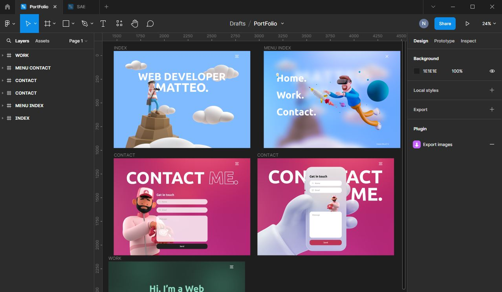
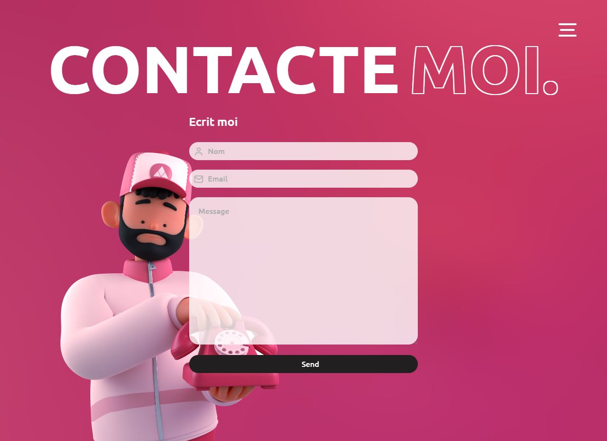

Mon portfolio est un projet personnel que j'ai réalisé pour mettre en avant mes compétences en tant que développeur web. J'ai utilisé mes connaissances en front-end et en back-end pour concevoir un site élégant et fonctionnel qui reflète mon identité professionnelle.


J'ai commencé par créer une maquette de mon portfolio en utilisant Figma, un outil de conception graphique. J'ai choisi une palette de couleurs sobre et élégante pour donner une image professionnelle à mon site.
Ensuite, j'ai utilisé HTML, CSS et JavaScript pour concevoir la structure et l'aspect visuel de mon site. J'ai fait un site responsive et ergonomique afin que l'utilisateur ai un confort d'utilisation maximum.
